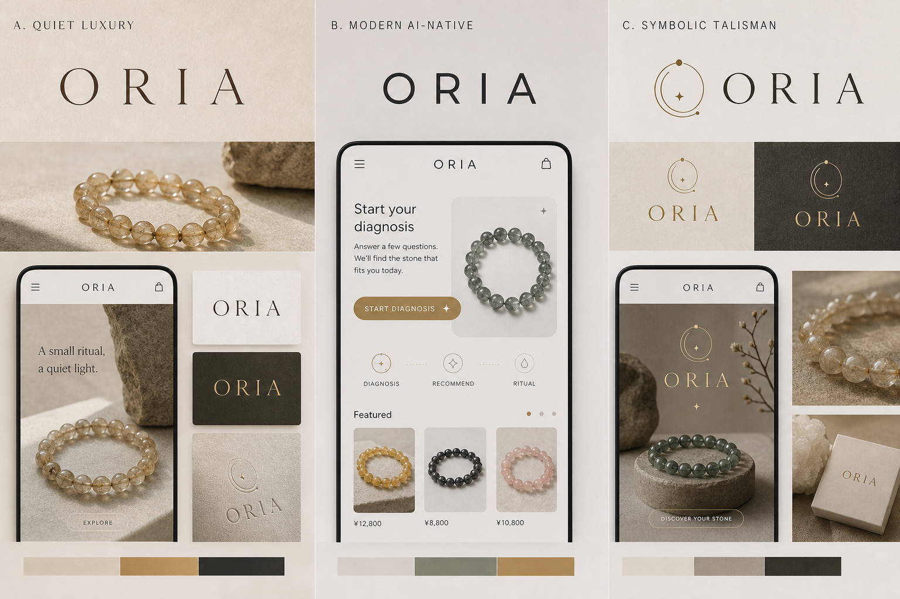

Three small questions
今の気分に、
石を選ぶ。
天然石の意味や色の印象から、いま身につけたい一本を静かに見つけます。
Opening Gift｜初回のお買い物に使えるクーポンを診断後にお届けします。
☰
ORIA
□

Diagnosis
Recommend
Ritual
小さな診断
答えはあとから変わってもかまいません。今日の直感だけで選んでください。
今、いちばん惹かれるテーマは？
直感で選ぶならどの色？
診断が完了しました。結果と Opening Gift は LINE または Email で受け取れます。
Not a promise
お守りのように、日常へ。
石の意味は、結果を約束するものではありません。色、質感、古くからの象徴性を、今日の自分に戻るための小さな合図として。